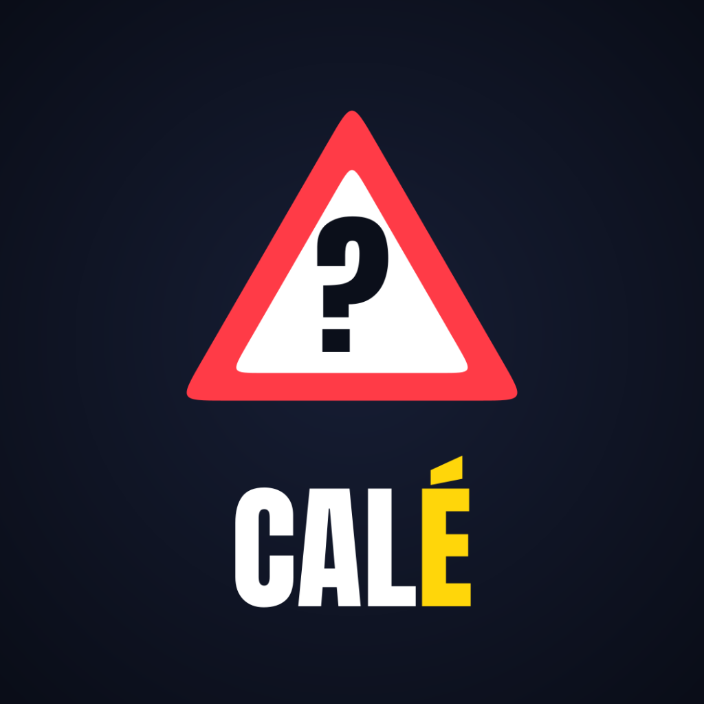

CALÉ ?T'es calé, ou tu cales ?
CALÉ ? est une chaîne de courtes vidéos verticales de quiz sur le code de la route et le permis de conduire : panneaux, priorités, vitesses, permis probatoire, examen… Chaque vidéo pose cinq questions, donne les réponses expliquées à partir de sources officielles, puis quelques conseils pour réussir son permis.
Outil de publication
Ce site héberge aussi l'outil interne de CALÉ ? qui envoie nos propres vidéos dans les brouillons de notre compte TikTok. Le créateur les relit, ajoute la légende et les publie lui-même depuis l'application TikTok. L'outil n'est utilisé que pour le compte de son propriétaire.
Contact : arwin.nirmaladas@gmail.com